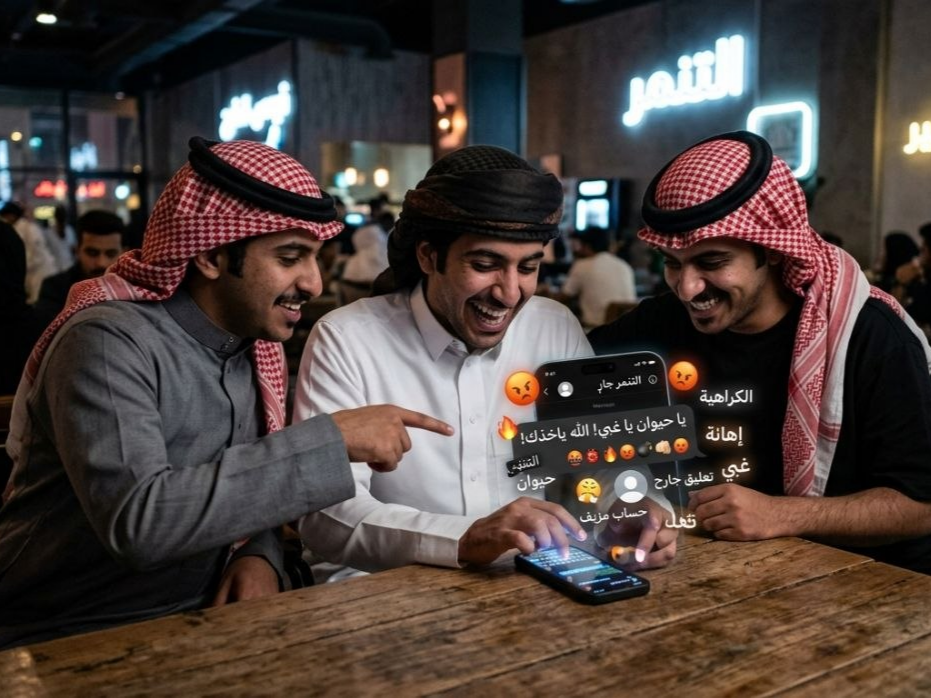

التنمر الإلكتروني هو استخدام الإنترنت أو وسائل التواصل الاجتماعي أو الأجهزة الرقمية لإيذاء شخص آخر أو تهديده أو إحراجه أو مضايقته.
أصبحت التكنولوجيا جزءًا أساسيًا من حياتنا اليومية، فقد جعلت التواصل أسرع وأسهل، وساعدت الناس على تبادل المعلومات والتواصل مع الأصدقاء والعائلة في أي وقت ومن أي مكان. ولكن مع هذه المميزات ظهرت بعض المشكلات الخطيرة، ومن أهمها التنمر الإلكتروني. ويُقصد بالتنمر الإلكتروني استخدام الإنترنت أو وسائل التواصل الاجتماعي أو الهواتف والأجهزة الرقمية لإيذاء شخص آخر نفسيًا أو اجتماعيًا، سواء من خلال الإهانة أو التهديد أو نشر الشائعات أو السخرية أو انتهاك الخصوصية.
ويُعد التنمر الإلكتروني من أخطر أنواع التنمر لأنه لا يرتبط بمكان أو وقت محدد، بل يمكن أن يحدث في أي لحظة وعلى مدار اليوم. كما أن المحتوى المسيء قد ينتشر بسرعة كبيرة عبر الإنترنت ويشاهده عدد كبير من الأشخاص خلال وقت قصير، مما يزيد من الأذى النفسي للضحية. وفي بعض الأحيان قد يشعر الشخص بأنه لا يستطيع الهروب من هذا الأذى لأن الهاتف ووسائل التواصل ترافقه طوال الوقت.
هناك أشكال عديدة للتنمر الإلكتروني، ولكل نوع طريقة مختلفة في التأثير على الضحية، ومن أهم هذه الأنواع:
ويحدث عندما يرسل شخص رسائل تحتوي على ألفاظ جارحة أو تهديدات أو سخرية مستمرة عبر تطبيقات الدردشة أو التعليقات أو البريد الإلكتروني. وقد يتكرر هذا السلوك بشكل يومي حتى يشعر الضحية بالخوف أو الحزن أو فقدان الثقة بنفسه.
يقوم بعض الأشخاص بنشر معلومات غير صحيحة أو شائعات عن شخص معين بهدف تشويه سمعته أمام الآخرين. وقد تنتشر هذه الأخبار بسرعة كبيرة عبر وسائل التواصل، مما يؤدي إلى مشاكل اجتماعية ونفسية للضحية.
ويشمل مشاركة الصور أو الفيديوهات أو المحادثات الخاصة دون إذن صاحبها، أو تهديده بنشرها لإحراجه أو ابتزازه. ويُعتبر هذا النوع من أخطر الأنواع لأنه يؤثر على شعور الشخص بالأمان والثقة.
قد يقوم المتنمر بإنشاء حساب باسم شخص آخر ونشر محتوى سيئ أو محرج باسمه، أو استخدام الحساب لإرسال رسائل غير لائقة للآخرين، مما يسبب مشاكل كبيرة للضحية.
ويحدث عندما يتم استبعاد شخص عمدًا من المجموعات الإلكترونية أو الألعاب أو المحادثات الجماعية بهدف إشعاره بأنه غير مرغوب فيه.
في بعض الأحيان يتم تعديل صور شخص أو تحويله إلى مادة للسخرية عبر الصور الساخرة أو الفيديوهات المنتشرة على الإنترنت، وقد يشارك عدد كبير من الناس في نشرها دون التفكير في تأثيرها النفسي.
أصبحت الألعاب الجماعية مكانًا شائعًا للتنمر، حيث قد يتعرض اللاعب للإهانة أو التهديد أو السخرية بسبب مستواه أو صوته أو شكله أو جنسه.
هناك عدة أسباب ساعدت على انتشار هذه الظاهرة، ومنها:
التنمر الإلكتروني لا يؤثر فقط على مشاعر الشخص، بل قد يسبب مشكلات نفسية واجتماعية وتعليمية خطيرة، مثل:
وفي الحالات الشديدة قد يؤدي إلى إيذاء النفس أو التفكير في الانتحار.
كما أن التنمر يؤثر أحيانًا على الأسرة بأكملها، حيث يشعر الأهل بالقلق والعجز عند رؤية ابنهم أو ابنتهم يعانون نفسيًا.
حماية الخصوصية من أهم الطرق للوقاية من التنمر الإلكتروني والاختراق، وهناك خطوات مهمة يجب اتباعها:
يجب أن تكون كلمة المرور طويلة وصعبة التخمين، وتحتوي على حروف وأرقام ورموز، مع عدم استخدام نفس كلمة المرور في جميع الحسابات.
هذه الميزة تضيف طبقة حماية إضافية للحسابات حتى إذا عرف شخص كلمة المرور.
مثل العنوان أو رقم الهاتف أو الصور الخاصة أو كلمات المرور مع أي شخص غير موثوق.
يجب جعل الحسابات خاصة قدر الإمكان والتحكم في من يستطيع رؤية المنشورات أو إرسال الرسائل.
بعض المتنمرين أو المخترقين يرسلون روابط مزيفة لسرقة الحسابات أو المعلومات.
ليس كل شخص على الإنترنت صادقًا، لذلك يجب الحذر عند إضافة أشخاص غير معروفين.
أي صورة أو تعليق يتم نشره قد يبقى على الإنترنت لفترة طويلة، لذلك يجب التفكير جيدًا قبل مشاركة أي شيء.
عند التعرض للتنمر الإلكتروني يجب التصرف بهدوء وعدم الرد بعنف أو شتائم، لأن الرد الغاضب قد يزيد المشكلة. ومن الخطوات المهمة:
يجب أخذ لقطات شاشة للرسائل أو الصور أو التعليقات المسيئة، لأن ذلك يساعد عند تقديم بلاغ.
معظم التطبيقات توفر خاصية الحظر أو كتم الرسائل، وهي خطوة مهمة لحماية النفس من الإزعاج المستمر.
يجب استخدام خاصية الإبلاغ الموجودة في المنصة حتى يتم مراجعة المحتوى المسيء.
مثل أحد الوالدين أو المعلم أو المرشد النفسي أو صديق داعم، لأن الصمت قد يزيد الضغط النفسي.
إذا كان هناك تهديد أو ابتزاز أو نشر صور خاصة، فيجب إبلاغ الجهات المختصة لحماية الضحية.
في بعض الحالات قد يساعد تقليل استخدام وسائل التواصل لفترة مؤقتة على تهدئة التوتر النفسي.
التعافي يحتاج إلى وقت ودعم نفسي واجتماعي، ومن الطرق التي تساعد على التعافي:
ومن المهم أن يعرف الضحية أنه ليس وحده، وأن طلب المساعدة علامة قوة وليس ضعفًا.
يمكن للمجتمع أن يلعب دورًا كبيرًا في دعم الضحايا ومنع استمرار التنمر، وذلك من خلال:
يلعب التمريض دورًا مهمًا جدًا في التوعية والوقاية والدعم النفسي للأشخاص المتضررين من التنمر الإلكتروني، خاصة لدى الأطفال والمراهقين. ولا يقتصر دور الممرض أو الممرضة على العلاج الجسدي فقط، بل يشمل أيضًا دعم الصحة النفسية والاجتماعية.
يقوم طاقم التمريض بتوعية الطلاب والمرضى بخطورة التنمر الإلكتروني وآثاره النفسية، وتعليمهم كيفية استخدام الإنترنت بطريقة آمنة.
قد يلاحظ الممرض تغيرات على الشخص مثل الحزن أو الانعزال أو القلق أو قلة النوم أو ضعف الشهية، وهذه قد تكون علامات على التعرض للتنمر.
يساعد التمريض الضحايا على التعبير عن مشاعرهم ويقدم لهم الدعم والتشجيع ويخفف من شعورهم بالخوف أو الخجل.
يمكن للممرض توضيح طرق حماية الخصوصية والحسابات الإلكترونية، وكيفية التصرف عند التعرض للإساءة.
يعمل التمريض مع المعلمين وأولياء الأمور لتوفير بيئة آمنة وداعمة للطلاب.
إذا ظهرت أعراض اكتئاب شديد أو إيذاء للنفس، يتم تحويل الحالة إلى طبيب أو أخصائي نفسي للحصول على العلاج المناسب.
يشارك التمريض في إعداد محاضرات وملصقات وأنشطة توعوية عن الاستخدام الآمن للإنترنت وأهمية الاحترام الإلكتروني.
في النهاية، أصبح الإنترنت جزءًا لا يمكن الاستغناء عنه في حياتنا، ولذلك يجب استخدامه بطريقة مسؤولة وآمنة. فالكلمات والصور التي ننشرها قد تؤثر بشكل كبير على مشاعر الآخرين. والتنمر الإلكتروني ليس مجرد مزاح، بل مشكلة حقيقية قد تسبب أذى نفسيًا واجتماعيًا خطيرًا. ومن خلال التوعية والدعم والاحترام يمكننا جميعًا المساهمة في بناء بيئة إلكترونية أكثر أمانًا وإيجابية للجميع.